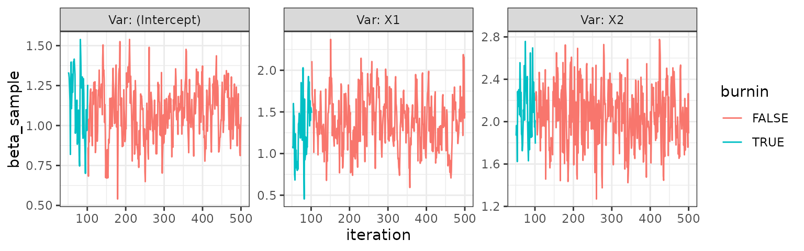

Adding methods for new families
It is very, very easy to extend the package to include a family that is not existing in the package. The only missing piece for any other families is a method for calculating the log-density of the distribution.
Since the calculation of the log-density for a family is implemented
using S3 methods, all the user needs to do is define a function called
log_density.*family_name* with family_name
specified as the relevant family.
Below is an example showcasing the single line of code a user needs to write to enable the use of an inverse gaussian family
Example of implementing method for inverse gaussian family
First, we generate some data to showcase the example.
n <- 1000
x1 <- rexp(n, 2)
x2 <- rbinom(n, 1, .5)
b0 <- 1
b1 <- 1.5
b2 <- 2
lin_pred <- b0+b1*x1+b2*x2
invgauss_fam <- inverse.gaussian()
y_invnorm <- statmod::rinvgauss(n, mean = invgauss_fam$linkinv(lin_pred),
shape = 1, dispersion = 1)
dat_invnorm <- data.frame(Y = y_invnorm, X1 = x1, X2 = x2)All the user needs to do is specify a method for computing the density of an inverse gaussian distribution like so:
log_density.inverse.gaussian <- function(family, mu, Y, ...) {
statmod::dinvgauss(Y, mean = mu, ..., log = T)
}where mu is the modelled mean
in the GLM model, and Y is the response variable.
Then, mcmcglm() can be called like so:
invnorm <- mcmcglm::mcmcglm(formula = Y ~ .,
family = inverse.gaussian(),
log_likelihood_extra_args = list(shape = 1, dispersion = 1),
data = dat_invnorm,
beta_prior = distributional::dist_gamma(1, 1),
w = 0.5)
#> Sampling from posterior ■■■■■■■■■■■ 34% | ETA: 2s
#> Sampling from posterior ■■■■■■■■■■■■■■■■■■■■■■ 69% | ETA: 1s
#> Sampling from posterior ■■■■■■■■■■■■■■■■■■■■■■■■■■■■■■■ 100% | ETA: 0s
trace_plot(invnorm)
where we specify inverse.gaussian() as the
family argument, and we make sure to add the additional
arguments to this density through the
log_likelihood_extra_args argument.